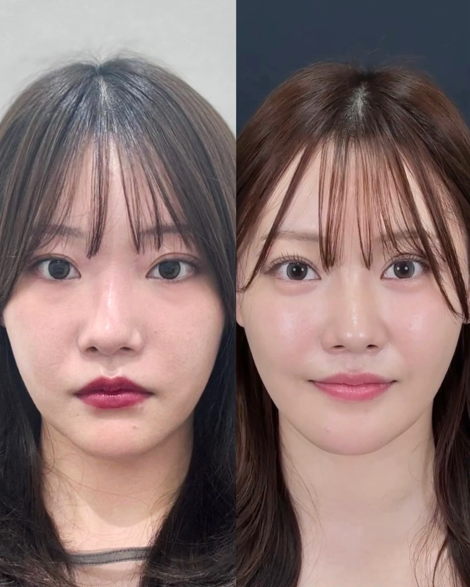
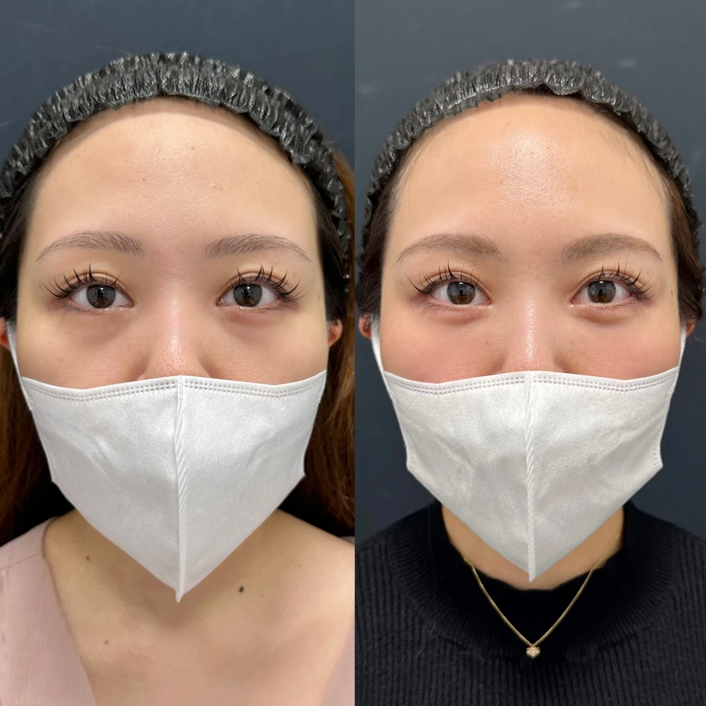

CASE 01
クマ取り＋涙袋形成
切らない目の下のたるみ取り＋脂肪注入（コンデンス・ナノ）＋涙袋形成
腫れ、内出血、しこり、左右差などのリスクがあります。経過には個人差があります。

クマをただ「取る」のではなく、涙袋から頬まで。あなた本来の表情を損なわない、自然で端正な目元をデザインします。
膨らみ、凹み、影、皮膚の薄さ、涙袋とのバランス。原因が違えば、必要な治療も変わります。

切らない目の下のたるみ取り＋脂肪注入（コンデンス・ナノ）＋涙袋形成
腫れ、内出血、しこり、左右差などのリスクがあります。経過には個人差があります。

膨らみと凹みを同時に整え、目元から頬へ自然につながるラインに。
腫れ、内出血、拘縮、凹凸、左右差などのリスクがあります。経過には個人差があります。
ここからは、松田医師が何を見て、なぜ複数の術式を使い分けるのかを順番にご説明します。
医師 → 診断の考え方 → 治療方法 → 自分の適応 → 費用、の順にご覧いただけます。
クマ治療で大切なのは、術式を先に決めることではありません。膨らみ、凹み、皮膚の薄さ、色味、頬のボリュームまで見たうえで、「何を取るか」「何を残すか」「どこを補うか」を設計します。
目元は数ミリの違いで印象が変わる場所。だから、一つの術式に全員を当てはめません。
膨らみ・凹み・皮膚・色味を分けて診断し、どこにアプローチすべきかを決めます。
脱脂、裏ハムラ、脂肪注入、表ハムラを状態に応じて組み合わせます。
目の下だけを平らにせず、表情が自然に見える中顔面全体のつながりを設計します。
脱脂後の凹みや左右差など、残存組織の状態を見ながら再設計します。
クマ取りは「脱脂をするか、しないか」だけではありません。原因に合わせて、複数の方法から選びます。
下のどれかに当てはまっても、治療方法を自分で決める必要はありません。
術式を決める前に、目元の状態から一緒に整理します。
料金も、治療の一部です。何にいくらかかるのかを事前に分かりやすくご説明します。
※表示価格は税込です。モニター価格の適用条件、麻酔費用、その他の費用については、カウンセリング時にご説明いたします。
適応・治療方法・料金まで、カウンセリング時に整理してご説明します。
美容医療を、施術を売る場所ではなく、悩みに向き合い、必要な医療を選ぶ場所へ。技術・説明・安心・アフターフォローまで含めて、一人ひとりにとっての最良を目指します。